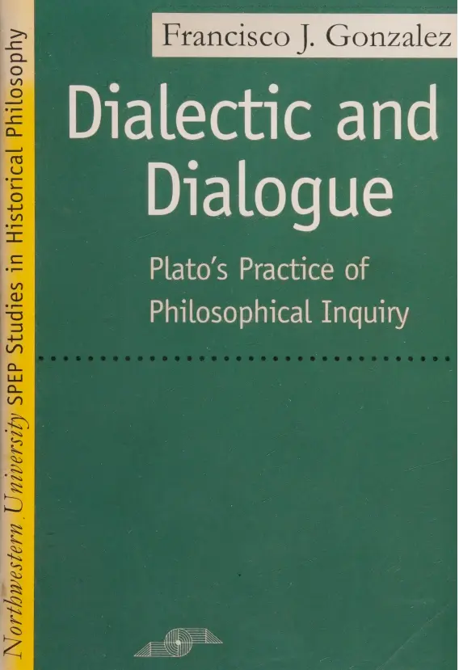

- Recommended by John Vervaeke in his “After Socrates” series (in lecture
#3) - So far, seems to be about how Platonic scholars focus too much on propositional knowledge (very much in line with Vervaeke’s “tyranny of the propositional”)
- I’m actually really surprised at how readable this is, shoutout to Gonzalez for writing in a non-academic way that a layperson can read
- With that being said, the intro is still dense with stuff that I don’t know yet (e.g. the different “schools” of Platonic scholarship), so I want to make some flashcards now
Intro flashcards - 1st pass (with Gemini)
- Giving Gemini the first 18 pages and My “make flashcards for me” prompt for AI
- Then tidying them up and culling any bad ones
- I did a similar thing with Bowen family systems - flashcards recently and it currently feels good to do a first pass with AI, spend a few days learning those flashcards, and then returning to the chapter and making flashcards by hand, at the next level of depth, now that I’ve got the essentials in my head, and also maybe there are some things that I don’t quite “get” yet so returning to the chapter helps
- I.e. Bottom-up learning
The two principles of Friedrich Schleiermacher's influential interpretation of Plato are
{{c1::the inseparability of philosophical content from the dialogue form}}
{{c2::the view that Plato's philosophy is systematic}}
|
The two principles of Friedrich Schleiermacher's influential interpretation of Plato are
{{c1::the inseparability of philosophical content from the dialogue form}}
{{c1::the view that Plato's philosophy is systematic}}
|
According to Schleiermacher,
{{c1::the content of Plato's philosophy}}
is inseparable from
{{c1::its artistic form, namely the written dialogue}}
|
A fundamental tension exists in Schleiermacher's interpretation
between
{{c1::Plato's use of the dramatic dialogue form }}
and
{{c1::the claim that his philosophy is systematic}}
|
The "developmentalist" school of interpretation
views the dialogues as
{{c1::records of an evolution
in Plato's philosophical system over time}}
|
A key tool for the "developmentalist" school,
used to
{{c1::establish the chronological order of dialogues}},
is {{c1::stylometry}}
|
(Plato)
A major criticism of the "developmentalist" approach is that
(3 lines)
{{c1::by focusing on an evolving system,
it often interprets the dialogues as if they were treatises,
thereby ignoring their dramatic form}}
|
The "nondoctrinal" interpretation
accepts Schleiermacher's principle of
{{c1::the unity of form and content}}
but rejects
{{c1::the idea that Plato was a systematic philosopher}}
|
The "{{c2::nondoctrinal}}" approach emphasises the
{{c1::unresolved or puzzling nature}}
of many dialogues,
AKA their {{c1::aporetic character}}
|
A primary criticism of the "nondoctrinal" interpretation
is that
(3 lines)
{{c1::by denying Plato had a system,
it risks turning Platonism into empty 'philosophizing'
without offering an alternative model of what Plato's philosophy is}}
|
(Re: Plato)
The "esotericist" interpretation claims
{{c1::Plato's true, systematic philosophy was not in the dialogues
but in his unwritten doctrines}}
|
(Re: Plato)
{{c2::Esotericists}} believe Plato's core doctrines were communicated
{{c1::Orally within the Academy}}
|
The esotericist school accepts Schleiermacher's idea that
{{c1::Plato's philosophy is systematic}}
but rejects
{{c1::the principle of the unity of form and content}}
|
Gonzalez argues that esotericists
separate Plato's method from its content,
viewing
{{c1::dialectic as a tool for inquiry
rather than the essence of philosophy itself}}
|
A key criticism of the esotericist position is that
it cannot adequately explain
{{c1::why Plato was hesitant to write down a system}}
given that
{{c1::other systematic philosophers like Kant and Hegel did so without reservation}}
|
Dogmatic interpretations of Plato assume that
philosophical knowledge is primarily {{c1::propositional}},
meaning
{{c1::it can be expressed in true statements without profound distortion}}
|
Dogmatic interpretations of Plato assume that
{{c1::philosophical method}} is subordinate to {{c1::results}},
viewing it
{{c1::as a tool that can be discarded once a system is achieved}}
|
Gonzalez suggests that knowing
{{c1::the essence of something, in its unity}}
is an example of nonpropositional knowledge because
{{c1::this essence cannot be reduced to a set of properties}}
|
Gonzalez suggests that self-knowledge
might be a form of nonpropositional knowledge,
as
{{c1::it seems irreducible to a set of facts
that another person could know about you}}
|
Gonzalez:
Nonpropositional knowledge is of that which is
{{c1::manifest}} without
{{c1::being fully describable}}
|
Gonzalez:
Nonpropositional knowledge is of that which is
{{c1::manifest without being fully describable}}
|
Gonzalez challenges the "constructivist" view
by arguing that
{{c1::the dialectic in "aporetic" dialogues is positive and constructive
despite its lack of propositional results}}
|
In contrast to many interpreters, Gonzalez argues that
{{c1::dialectic is not a mere tool for finding a solution}}
but
{{c1::is in some sense the solution itself}}
|
Gonzalez argues that the method of {{c1::hypothesis}},
found in dialogues like the Meno and Phaedo,
is consistently considered inferior to {{c1::dialectic}}
|
Gonzalez claims the argument in the Seventh Letter rules out
(2 things)
{{c1::not only written but also oral discourse}}
as {{c1::a means of fully expressing philosophical truth}}
|
Gonzalez aligns with the "nondoctrinal" camp by
{{c1::emphasising the inseparability of philosophy from dramatic form
and rejecting the idea that philosophy must be systematic}}
|
Gonzalez aims to show that
Plato's conception of philosophy
is fundamentally opposed to
{{c1::systematisation}}
|
Gonzalez portrays dialectic
as existing between the two extremes of
{{c1::ordinary discourse}} and {{c1::sophistic discourse}}
|
The three major means employed by dialectic
in its search for truth
are
{{c1::
Verbal analysis
Arguments
Images}}
|
Gonzalez claims that dialectic is a
{{c1::"knowledge of how to use" language, argumentation, and images }}
{{c2::to awaken an insight that transcends them}}
|
Gonzalez claims that dialectic is a
{{c1::"knowledge of how to use" language, argumentation, and images
to awaken an insight that transcends them}}
Some quick additional ones to fill in the gaps
The 3 opposing schools of Platonic scholarship
{{c1::
Nondoctrinal
Esotericist
Developmentalist
(NED)
}}
|
The school of Platonic scholarship that follows Schleirmacher's path:
{{c1::Developmentalist}}
|
The camp of Platonic scholarship that Gonzalez aligns himself with:
{{c1::Nondoctrinal}}
|
The nondoctrinal interpretation of Plato insists
{{c1::that Plato's dialogues should be read as dialogues,
with attention to their dramatic and ironic character}}
|
(Plato)
The Constructivist Thesis argues:
{{c1::That the elenchus
is capable of establishing philosophical propositions}}
|
The Nonconstructivist Thesis argues
{{c1::That the elenchus has only the negative function
of freeing interlocutors from the "conceit of wisdom".}}